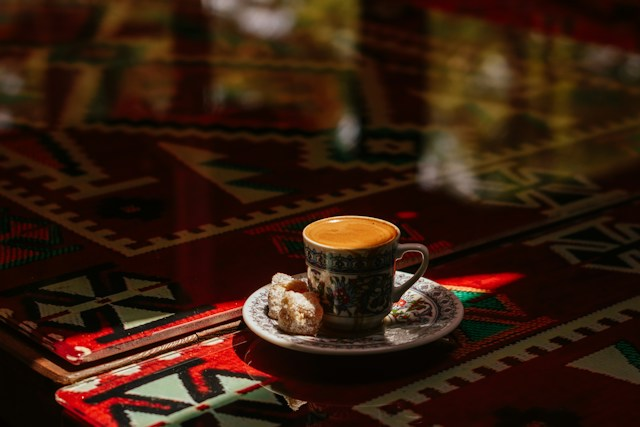

Case Study A • Visibility & Community
A home-grown coffee brand nobody could find
Genuinely good instant coffee, missing from Google's first 4 pages for “best coffee brands in India.”
5 days
of manual research
₹3.5–5K
total campaign cost
₹15–50K
equivalent paid-reach value
Problem
The brand makes genuinely good instant coffee but doesn't appear on Google's first 4 pages for “best coffee brands in India.”
Insight
After 5 days of manual research, one buried Reddit review showed the real gap was discoverability, not quality.
Solution – a three-loop campaign
- Influencer seeding for awareness.
- A nostalgia-driven UGC storytelling contest for engagement.
- Structured data collection for product intelligence.
Outcome
Pitched directly to the founder, who was interested in moving forward and asked about my background. The plan cost ₹3,500–5,000, against an equivalent paid-reach value of ₹15,000–50,000.